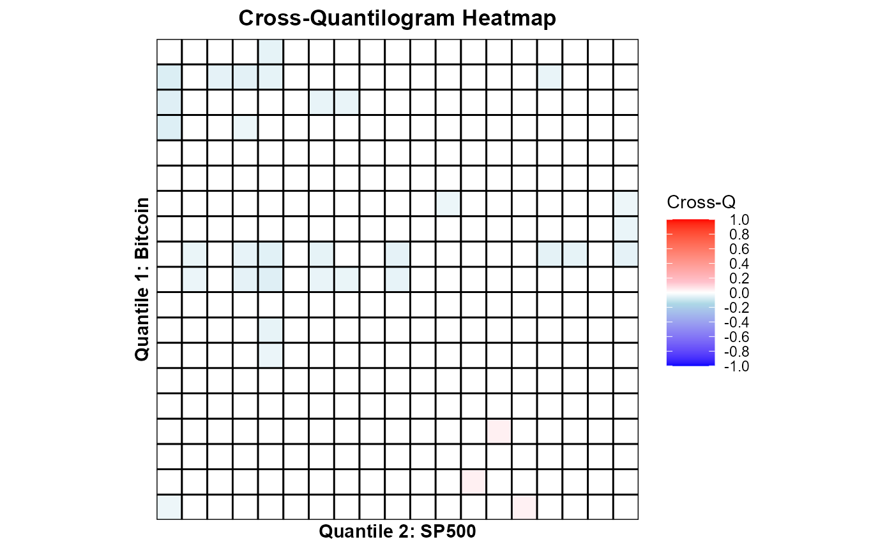

Hedge & Safe Haven Testing with HedgeSafeHaven
Jawad Shahzad
2025-11-02
getting-started.Rmdknitr::opts_chunk$set(message = FALSE, warning = FALSE)
Hedge and Safe Haven Testning
The package/repo is developed to test hedge and safe haven hypotheses (Baur and McDermott 2010), estimate the hedge ratio, hedge effectiveness, and optimal portfolio weights (Basher and Sadorsky 2016), cross-quantilogram-based predictability (Han et al. 2016) and the conditional diversification benefits (Christoffersen et al. 2012, 2018).
Background & Motivation
The role of assets such as gold and bitcoin as potential hedges or safe havens for equity markets has attracted increasing scholarly attention (e.g., Ali et al. (2020); Shahzad et al. (2019); Shahzad et al. (2020); Mujtaba et al. (2024)) amid heightened global economic uncertainty, persistent inflationary pressures, and evolving monetary policy regimes.
Market Context (as of late 2025)
-
Gold has surged to record highs above
$4,000 per ounce, driven by central-bank purchases and
portfolio diversification away from fiat currencies.
(BeInCrypto, 2025) -
Bitcoin climbed above $110,000
amid U.S. dollar weakness and renewed “digital-gold” narratives.
(Forbes, 2025) - Short-term divergences have appeared — gold rallies while bitcoin
retreats — highlighting their differing safe-haven mechanisms.
(CoinDesk, 2025)
The HedgeSafeHaven package provides econometric tools to quantify such behaviors using GARCH–DCC, regression-based safe-haven models, cross-quantile dependence, and conditional diversification benefits (CDB).
Example Workflow — Gold and Bitcoin
We illustrate how to use gold (GLD) and bitcoin (BTC) as potential hedges or safe havens for the U.S. stock market (S&P 500).
1️⃣ Hedge / Safe-Haven Classification
library(HedgeSafeHaven)
# Regression-based hedge/safe-haven estimation
# SP500 and Gold
data("hedgedata")
res_gld <- hedge_safehaven_bm10(hedgedata$SP, hedgedata$GLD)
print(res_gld)## Hedge Coefficient p_value
## 1 c0 0.04988263 0.06089549
## 2 0.10 -0.07209026 0.27142322
## 3 0.05 -0.11405518 0.01072091
## 4 0.01 0.03023066 0.56524296
# SP500 and Gold
res_btc <- hedge_safehaven_bm10(hedgedata$SP, hedgedata$BTC)
print(res_btc)## Hedge Coefficient p_value
## 1 c0 0.8844556 3.060991e-20
## 2 0.10 0.4617737 3.194434e-02
## 3 0.05 1.1166908 1.300167e-12
## 4 0.01 1.5372902 5.973991e-30
# Classification
classify_bm10(res_gld)## [1] "Selected asset is a not a hedge - safe haven for 5% ."
classify_bm10(res_btc)## [1] "Selected asset is a not a hedge - not a safe haven ."This classifies gold/bitcoin role as a hedge or safe haven relative to sp500 using the Baur and McDermott (2010) approach.
2️⃣ Hedge Effectiveness via DCC
# Hedging asset: Gold
res_gld <- hedge_effectiveness_dcc(hedgedata$SP, hedgedata$GLD)
print(res_gld)## beta_mean beta_min beta_max HE OPW
## 1 0.01634998 -0.8941619 1.532328 0.03604662 0.4852705
# Hedged asset: Bitcoin,
res_btc <- hedge_effectiveness_dcc(hedgedata$SP, hedgedata$BTC)
print(res_btc)## beta_mean beta_min beta_max HE OPW
## 1 0.06999591 -0.01849912 0.4599944 0.1095714 0.030164723️⃣ Cross-Quantile Dependence Heatmaps
## Install the 'quantilogram' library
# install.packages("quantilogram")
library(quantilogram)
# Use gold (GLD) as predicted variable, S&P (SP) as predicting variable
df1 <- hedgedata[, c("GLD", "SP")]
## setup and estimation
k = 1 ## lag order
vec.q = seq(0.05, 0.95, 0.05) ## a list of quantiles
B.size = 100 ## Repetition of bootstrap
res1 = crossq.heatmap(df1, k, vec.q, B.size, var1_name = "Gold", var2_name = "SP500")
## result
print(res1$plot)
# Use bitcoin (BTC) as predicted variable, S&P (SP) as predicting variable
df2 <- hedgedata[, c("BTC", "SP")]
res2 = crossq.heatmap(df2, k, vec.q, B.size, var1_name = "Bitcoin", var2_name = "SP500")
## result
print(res2$plot)
These heatmaps visualize how dependence across quantiles changes from S&P 500 to gold and bitcoin — revealing whether gold/bitcoin remains uncorrelated or negatively correlated (safe haven) during market stress.
4️⃣ Conditional Diversification Benefit (CDB)
# Compute CDB for SP500–Gold portfolio at 5% tail
res_cdb1 <- cdb(hedgedata$SP, hedgedata$GLD, p = 0.05, w = 0.10)
print(res_cdb1)## [1] 0.3747956
# Compute CDB for SP500–Bitcoin portfolio at 5% tail
res_cdb2 <- cdb(hedgedata$SP, hedgedata$GLD, p = 0.05, w = 0.10)
print(res_cdb2)## [1] 0.3747956This returns a 1×3 matrix of CDB values for portfolio weights of 5%, 10%, and 20% in the hedging asset (gold/bitcoin). Higher CDB values imply stronger diversification benefits w.r.t weights.